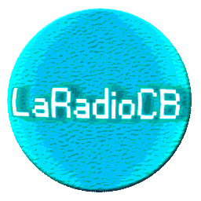
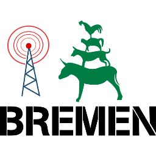
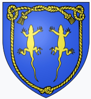
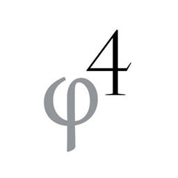
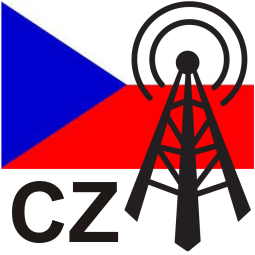

500 receivers online,
622 people listening.
Want to get your receiver online? Download OpenWebRX now!
0-30 MHz SDR, I1cra/Iz1glg, Italy
http://kiwisdr.briata.org:8073KiwiSDR v1.364 📡 GPS ⏳ LIMITS 📻 DRM (2 / 4 users) HF
0-30 MHz SDR, K1RA/KW4VA Virginia, USA
http://kiwisdr.k1ra.us:8073KiwiSDR v1.364 📡 GPS ⏳ LIMITS 📻 DRM (1 / 8 users) HF

🔴 RTL-SDR (26 / 20 users) 27.2MHz
🔴 📡 SDR Cercedilla, España ✨ LaRadioCB 🌠
http://laradiocb.ddns.me:8073🔴 RTL-SDR (26 / 20 users) 27.2MHz
SK3W, Fernebo Contest Station
http://kiwisdr.sk3w.se:8073KiwiSDR v1.364 📡 GPS ⏳ LIMITS 📻 DRM (2 / 4 users) HF
10KHz - 30 MHz SDR - G8JNJ - South West UK - Using Loop on the Ground antenna
http://southwest.ddns.net:8073KiwiSDR v1.364 📡 GPS ⏳ LIMITS 📻 DRM 📶 ANT-SWITCH (2 / 4 users) HF
SV8RV | Zakynthos (Zante) isl., GREECE
http://sv8rv.dyndns.org:8073KiwiSDR v1.364 📡 GPS 📻 DRM (3 / 8 users) HF
Fenu-Radio | Kefikon Switzerland
http://fenu-radio.ddns.net:8073KiwiSDR v1.363 ⏳ LIMITS 📻 DRM (1 / 4 users) HF
15 KHz-30 MHz SDR, KA7U | 1 meter loop with differential amp.
http://ka7u.no-ip.org:8073KiwiSDR v1.364 📡 GPS ⏳ LIMITS 📻 DRM (2 / 4 users) HF
NORTHLAND MARITIME RADIO | Bay of Islands, New Zealand
http://kiwisdr.northlandradio.nz:8073KiwiSDR v1.364 ⏳ LIMITS 📻 DRM (5 / 8 users) HF
10 kHz-30 MHz SDR, SM2BYC, Sweden
http://sm2byc.ddns.net:8073KiwiSDR v1.364 📡 GPS ⏳ LIMITS 📻 DRM 📶 ANT-SWITCH (1 / 4 users) HF
0-30 MHz SDR, Leiden, The Netherlans. Wellbrook ALA1530 loop antenna
http://kiwi-sdr1-leiden.impactam.nl:8073KiwiSDR v1.364 📡 GPS ⏳ LIMITS 📻 DRM 📶 ANT-SWITCH (1 / 4 users) HF
0.5-32 MHz SDR (2 x KiwiSDR), Marahau, Tasman District, New Zealand
http://kiwisdr.owdjim.gen.nz:8073KiwiSDR v1.364 📡 GPS ⏳ LIMITS 📻 DRM (1 / 4 users) HF
0-30 MHz SDR#1, JH1PGF, TOKYO, JAPAN.
http://kiwisdr.hirokinet.com:8074KiwiSDR v1.364 📡 GPS ⏳ LIMITS (3 / 4 users) HF
Wellbrook ALA330S (0.15-30MHz), Khimki, Russia
http://msk.swl.su:8073KiwiSDR v1.364 📡 GPS ⏳🚫 LIMITS (1 / 4 users) HF
0-32 MHz SDR, AB1KW, Concord NH USA
http://kiwisdr.surriel.com:80KiwiSDR v1.364 📡 GPS 📻 DRM (6 / 8 users) HF
0-30 MHz SDR, DL1BAJ, Hooksiel, Friesland, North Sea coast, Germany
http://webcamapo.dynt4.de:8073KiwiSDR v1.364 🎵 20 kHz 📡 GPS (0 / 3 users) HF
0-30 MHz HF SDR, VE6SLP / VE6JY - Lamont, Alberta, Canada
http://kiwisdr.ve6slp.ca:8173KiwiSDR v1.364 📡 GPS ⏳ LIMITS 📻 DRM (1 / 8 users) HF
0-30 MHz SDR | HB9ODP | Ticino, South Switzerland, 1600m, near Gotthard Pass | 160m triangle loop antenna H~12m
http://hb9odp.proxy.kiwisdr.com:8073KiwiSDR v1.364 📡 GPS ⏳ LIMITS 📻 DRM (3 / 8 users) HF
0-30 MHz SDR, VK3TLW, Burwood East, Melbourne, Australia
http://kiwisdr.vk3tlw.net:8073KiwiSDR v1.364 📡 GPS ⏳ LIMITS 📻 DRM (0 / 4 users) HF
0-30 MHz SDR, JAVARADIOFRANCE
http://javaradiofrance.ddns.net:8073KiwiSDR v1.364 📡 GPS 📻 DRM (0 / 4 users) HF
0-30 MHz SDR, UR4PWJ, LUTSK, UKRAINE
http://ur4pwj.lrv.net.ua:8073KiwiSDR v1.364 ⏳ LIMITS 📻 DRM 📶 ANT-SWITCH (2 / 4 users) HF
KiwiSDR Kaustinen, Finland 🇫🇮 • 0-30 MHz • Northern Europe
http://sdr.vy.fi:80KiwiSDR v1.364 📡 GPS ⏳ LIMITS 📻 DRM 📶 ANT-SWITCH (0 / 4 users) HF
0.02-32 MHz SDR at Szekesfehervar, Hungary [2x27m HF Dipole]
http://fsdr.duckdns.org:80KiwiSDR v1.364 📡 GPS ⏳ LIMITS 📻 DRM (1 / 4 users) HF
0-30 MHz SDR, W3PIE, Uniontown, Western Pennsylvania, USA
http://kiwisdr.dlinkddns.com:8073KiwiSDR v1.359 📡 GPS (1 / 3 users) HF
0-30 MHz SDR, Misc. Loop Antennas, Brisbane, Australia
http://sdrbris.proxy.kiwisdr.com:8073KiwiSDR v1.364 📡 GPS ⏳ LIMITS 📻 DRM (3 / 4 users) HF
0-30 MHz SDR, M0TAZ, London
http://sdr.m0taz.co.uk:8073KiwiSDR v1.364 📡 GPS ⏳ LIMITS 📻 DRM (5 / 8 users) HF
10kHz-32 MHz SDR, CS5SEL ISEL, Lisbon, Portugal
http://kiwi-hf.hamradio.isel.ipl.pt:8073KiwiSDR v1.359 📡 GPS ⏳ LIMITS (0 / 3 users) HF
0-30MHz 32 Channel SDR, VK3KHZ, Croydon, Victoria, Australia
http://sdr-amradioantennas.com:8073KiwiSDR v1.364 📡 GPS ⏳ LIMITS (2 / 4 users) HF
SWLJO43/2, City Windom, near Hamburg, Germany
http://jnlb0dg4phlqpnun.myfritz.net:8074KiwiSDR v1.364 📡 GPS 📻 DRM (1 / 4 users) HF
---SV1QJG---GREECE--- | NEA MAKRI
http://kwhighpower.ddns.net:8073KiwiSDR v1.364 ⏳ LIMITS 📻 DRM (4 / 4 users) HF
0-30 MHz SDR, KH6ILT, Elida OH USA
http://65.29.112.189:8073KiwiSDR v1.364 📡 GPS ⏳ LIMITS 📻 DRM (1 / 4 users) HF
0-30 MHz IMPACT_SDR, Leiden, The Netherlands. Wellbrook ALA1530 antenna
http://kiwi-sdr2-leiden.impactam.nl:8073KiwiSDR v1.362 📡 GPS ⏳ LIMITS (1 / 4 users) HF
0-30 MHz SDR, DC9FD, Fulda, Germany, ALA1530LN , GPS-Ant. Panasonic VIC100
http://z2abpyweepil7rhq.myfritz.net:8073KiwiSDR v1.364 📡 GPS ⏳ LIMITS 📶 ANT-SWITCH (0 / 4 users) HF
N8MDP | Cleveland, Ohio, USA
http://n8mdp.dyndns.org:8073RTL-SDR + Homemade Downconverter (0 / 4 users) 40m
KiwiSDR, HB9EHO, HB9FXQ, DM9KS/Hamspirit.de 0-30M Dashboard: https://dashboard.superlogical.ch/dashboard/db/technikraum-dashboard?refresh=10s&orgId;=1 | Lanzenhäusern, Switzerland
http://kiwisdr.hamspirit.de:8073KiwiSDR v1.364 📡 GPS ⏳ LIMITS 📻 DRM (1 / 4 users) HF
144-146MHz RTL-SDR, Dannenberg (Elbe), Germany
http://hgdyn.servebeer.com:8099Raspberry Pi 3, R820T2 RTL-SDR, PGA-103+ LNA, HB9CV (0 / 4 users) 2m
20 kHz - 30 MHz Roelof Bakker , pa0rdt | Middelburg, Netherlands
http://83.162.220.82:8073KiwiSDR v1.364 📡 GPS 📻 DRM (6 / 8 users) HF
0-30 MHz SDR, JE1AHJ, Tokyo, Japan
http://gnss.0am.jp:80KiwiSDR v1.364 📡 GPS 📻 DRM (2 / 4 users) HF
0-30 MHz SDR, Kingwood, Texas
http://skhicks.ddns.net:8073KiwiSDR v1.364 ⏳ LIMITS 📻 DRM (0 / 3 users) HF
0-30 MHz SDR, VK2CEL, Australia | Raymond Terrace, NSW
http://www.marcelpost.com:8073KiwiSDR v1.364 📡 GPS ⏳ LIMITS 📻 DRM (1 / 4 users) HF
KiwiSDR, G3PWJ, Stourbridge, UK,
http://81.174.134.21:8073KiwiSDR v1.359 📡 GPS ⏳ LIMITS (0 / 4 users) HF
0-30 MHz SDR, G4BKH | Oldham, United Kingdom
http://g4bkhkiwi.ddns.net:8073KiwiSDR v1.364 📡 GPS ⏳ LIMITS 📻 DRM (1 / 4 users) HF
0-32 MHz SDR, WB2EEE, Carolina Windom at 20m - Highland Falls, New York, USA
http://matt1234.viewnetcam.com:8073KiwiSDR v1.364 ⏳ LIMITS 📻 DRM (0 / 4 users) HF
KiwiSDR in Nizhny Novgorod, European Russia
http://r3tio.proxy.kiwisdr.com:8073KiwiSDR v1.364 📡 GPS ⏳ LIMITS 📻 DRM (0 / 4 users) HF
0-30 MHz SDR, JA1GJD/2, Aichi, JAPAN
http://rio.f5.si:8073KiwiSDR v1.364 🎵 20 kHz 📡 GPS 📶 ANT-SWITCH (0 / 3 users) HF
TWR Bonaire 0-30MHz KiwiSDR
http://bonaire.twrmon.net:8073KiwiSDR v1.364 📡 GPS ⏳ LIMITS 📻 DRM (1 / 3 users) HF
0-30 MHz SDR, | Wels, Austria
http://witikiwi.ddns.net:8073KiwiSDR v1.364 📡 GPS ⏳ LIMITS 📶 ANT-SWITCH (1 / 3 users) HF
0-30 MHz SDR, Qatar
http://midskiwi.ddns.net:8073KiwiSDR v1.363 📡 GPS ⏳ LIMITS 📻 DRM (0 / 4 users) HF
0-30 MHz HF SDR, VE6JY - Lamont, Alberta, Canada
http://ciw321.cfars.ca:8174KiwiSDR v1.364 📡 GPS ⏳ LIMITS 📻 DRM (3 / 8 users) HF
0-32MHz SDR | Near Lublin/POLAND
http://kiwisdrlublin.ddns.net:8073KiwiSDR v1.364 📡 GPS ⏳ LIMITS 📻 DRM (0 / 3 users) HF
PE1OPQ | Netherlands
http://94.214.128.124:8073KiwiSDR v1.364 📡 GPS ⏳ LIMITS 📻 DRM (1 / 4 users) HF
0-30 MHz SDR, IU8CRI, ITALY | Grottaminarda, Avellino , Italia
http://xlx066.homepc.it:8073KiwiSDR v1.364 📡 GPS 📻 DRM (2 / 4 users) HF
10kHz-20 MHz SDR - F1JEK/P - France - DX-500 active antenna.
http://f1jeksdr1.ddns.net:8073KiwiSDR v1.364 📡 GPS 📻 DRM (0 / 4 users) HF
0-32 MHz SDR, HB9TTU, Russikon Switzerland
http://hb9ttu.dyndns.org:8073KiwiSDR v1.364 ⏳ LIMITS 📻 DRM (1 / 4 users) HF
OH5AE SDR | Elimäki, Finland
http://oh5ae.dyndns.org:8073KiwiSDR v1.364 📡 GPS ⏳ LIMITS 📻 DRM (0 / 4 users) HF
0-30 MHz SDR, AKKY, JAPAN
http://202.127.177.27:8073KiwiSDR v1.364 📡 GPS ⏳ LIMITS (2 / 8 users) HF

RTL-SDR with MC PSA4-5043+ Preamp and MC Bandpass Filter (0 / 20 users) 2m
2m Web SDR | University of Applied Sciences | Clubstation DL0HT | Bremen, Germany
https://websdr.dl0ht.de/2m/RTL-SDR with MC PSA4-5043+ Preamp and MC Bandpass Filter (0 / 20 users) 2m
emeraldsdr1 | Carlow, Ireland
http://emeraldsdr1.ddns.net:8073KiwiSDR v1.364 ⏳ LIMITS 📻 DRM (0 / 4 users) HF
0-30 MHz SDR, HL5NTR, Daegu_City / SOUTH KOREA
http://hl5ntr.ddns.net:8073KiwiSDR v1.303 ⏳ LIMITS (0 / 1 users) HF
0-30 MHz SDR, DF0KL, Hilgenriedersiel, Germany
http://sielsdr.ddns.net:8073KiwiSDR v1.364 📡 GPS 📻 DRM 📶 ANT-SWITCH (3 / 4 users) HF
0-30 MHz BjargtangarSDR, Westfjords Iceland
http://tangar.utvarp.com:8073KiwiSDR v1.364 📡 GPS ⏳ LIMITS 📻 DRM (2 / 8 users) HF
0-30 MHz SDR, W1HB | Arlington, Virginia USA
http://68.33.101.145:8073KiwiSDR v1.364 📡 GPS 📻 DRM (1 / 4 users) HF
0-30 MHz SDR, Black Forest
http://blackforestkiwi.ddns.net:8075KiwiSDR v1.364 ⏳ LIMITS 📻 DRM (1 / 3 users) HF
0-30 MHz SDR, VK6QS ,Collie, Australia
http://collie2.ddns.net:8073KiwiSDR v1.364 📡 GPS ⏳ LIMITS 📻 DRM (2 / 7 users) HF
0-30 MHz SDR, TWR Africa
http://kiwi.twrafrica.org:8073KiwiSDR v1.364 📡 GPS 📻 DRM (1 / 8 users) HF
0-30 MHz SDR - GB0SNB - Kelvedon Hatch Secret Nuclear Bunker, Essex, UK (NE London)
http://sdr.gb0snb.com:8073KiwiSDR v1.364 ⏳ LIMITS 📻 DRM (4 / 8 users) HF
1-30Mhz SDR, YO3IUL, Bucharest-ROMANIA
http://kiwisdr.yo3iul.ro:8074KiwiSDR v1.364 📡 GPS ⏳ LIMITS 📻 DRM (1 / 4 users) HF
SW SDR, DL2SBA | Filderstadt/Germany
http://dl2sba.ddns.net:8073KiwiSDR v1.364 📡 GPS ⏳ LIMITS 📻 DRM 📶 ANT-SWITCH (0 / 3 users) HF
0-30 MHz SDR, SM0JZT, Sweden
http://kiwisdr.thulesius.se:8073KiwiSDR v1.364 📡 GPS (1 / 4 users) HF
0 - 30 MHz SDR, OZ1AEF, Denmark
http://85.191.71.157:8073KiwiSDR v1.364 📡 GPS ⏳ LIMITS 📻 DRM 📶 ANT-SWITCH (0 / 4 users) HF
0-32 MHz SDR, SQ5BPD/SQ5ALQ, POLAND | Warszawa
http://88.220.45.111:8073KiwiSDR v1.364 📡 GPS ⏳ LIMITS 📻 DRM (0 / 3 users) HF
0-30MHZ optimized for LW/MW reception. | Edinburgh, Indiana, USA
http://38.86.67.206:8078KiwiSDR v1.364 ⏳ LIMITS 📻 DRM (0 / 4 users) HF
0-30 MHz SDR, SM0KOT, Sweden | Mala, Northern Sweden.
http://aspliden.mooo.com:8073KiwiSDR v1.364 📡 GPS 📻 DRM (2 / 4 users) HF
0-30 MHz SDR, VK1CM Canberra Australia
http://kiwisdrvk1cm.ddns.net:8073KiwiSDR v1.364 📡 GPS 📻 DRM (1 / 4 users) HF
Kiwi SDR located at the M0KWR QTH | Stibbington,Peterborough, Cambs, England , UK
http://kiwisdr-m0kwr.ddns.net:8073KiwiSDR v1.364 📡 GPS ⏳ LIMITS 📻 DRM (1 / 4 users) HF
0-30 MHz SDR,At Albertirsa HA7006SWL, Hungary
http://kiwiradio.proxy.kiwisdr.com:8073KiwiSDR v1.364 📡 GPS ⏳ LIMITS 📻 DRM (2 / 4 users) HF
0-30 MHz SDR, VE3HOA | Ottawa, Canada
http://ve3hoa.ddns.net:8073KiwiSDR v1.364 📡 GPS ⏳ LIMITS 📻 DRM (3 / 4 users) HF
0-30 MHz SDR, VE7AB/VE7XMC, University of Victoria
http://kiwisdr.ece.uvic.ca:8073KiwiSDR v1.364 ⏳ LIMITS 📻 DRM (0 / 4 users) HF
0-30 MHz SDR an optimized 160m Topband, Luedinghausen near Muenster NRW, DL4QB Germany JO31QS
http://dl4qb.proxy.kiwisdr.com:8073KiwiSDR v1.364 📡 GPS 📻 DRM (1 / 4 users) HF
0-30 MHz SDR, WS5W Anna Texas USA
http://204.235.44.74:8073KiwiSDR v1.364 📡 GPS 📻 DRM (3 / 8 users) HF
0-30 MHz SDR, SA0CAM, Sweden
http://kiwicam.sk3w.se:8073KiwiSDR v1.364 📡 GPS 📻 DRM (0 / 4 users) HF
ON5KQ SDR1 - active vertical dipole | Lauwe, Belgium
http://on5kq.ddns.net:8073KiwiSDR v1.364 ⏳ LIMITS 📻 DRM (0 / 4 users) HF
0-30 MHz SDR, I1FQH | Casale Monferrato, ITALY
http://i1fqh.proxy.kiwisdr.com:8073KiwiSDR v1.364 📡 GPS 📻 DRM (1 / 3 users) HF
PA0EBC with PA0NHC shielded activeloop | Groningen, Netherlands
http://mwiek.nl:8073KiwiSDR v1.364 📡 GPS ⏳ LIMITS 📻 DRM (0 / 4 users) HF
0-30 MHz SDR, EA2CQ, Vitoria-Gasteiz, Basque Country, North Spain
http://ea2cq.dyndns.org:8073KiwiSDR v1.364 ⏳ LIMITS 📻 DRM (0 / 4 users) HF
0-30 MHz SDR, LA3SP, Norway
http://91.149.49.175:8073KiwiSDR v1.364 📡 GPS ⏳ LIMITS 📻 DRM (0 / 4 users) HF
0-30 MHz SDR, Westminster, MD, USA
http://sdr.hfunderpants.com:8073KiwiSDR v1.364 📡 GPS ⏳🚫 LIMITS (3 / 4 users) HF
0-30 MHz SDR, France (Belgium border)
http://sdr.mimosys.net:8073KiwiSDR v1.364 ⏳ LIMITS 📻 DRM (0 / 4 users) HF
0-30 MHz SDR, WA6OUR Sammamish, Washington
http://wa6our.ddns.net:8073KiwiSDR v1.359 ⏳ LIMITS (1 / 4 users) HF
0-30MHz 32 Channel SDR, VK3KHZ, Croydon, Victoria, Australia
http://sdr-amradioantennas.com:8074KiwiSDR v1.364 📡 GPS ⏳ LIMITS (2 / 4 users) HF
G0EZY-1: 10 kHz-30 MHz KiwiSDR | Doncaster, UK
http://g0ezy-kiwisdr.ddns.net:8073KiwiSDR v1.364 📡 GPS 📻 DRM (2 / 8 users) HF
0-30 MHz SDR, West of Iceland (Borgarnes) TF1A Iceland
http://194.144.253.31:80KiwiSDR v1.364 📡 GPS 📻 DRM (2 / 8 users) HF
𝟭 📻 SWL SDR, Lausanne, 🇨🇭 Switzerland 👍 0.1-30 Mhz all modes - 📡 Mag-Loop & ant switch - Node 1
http://swiss.ham-radio-op.net:8073KiwiSDR v1.364 📡 GPS 📻 DRM 📶 ANT-SWITCH (3 / 4 users) HF
0-30 MHz SDR, Chongqing, China , China Fast URL:http://wolfx5.vicp.net:16295
http://railgun.proxy.kiwisdr.com:8073KiwiSDR v1.364 📡 GPS 📻 DRM (0 / 4 users) HF
SWLJO43/3, City Windom, near Hamburg, Germany
http://jnlb0dg4phlqpnun.myfritz.net:8075KiwiSDR v1.364 📡 GPS 📻 DRM (1 / 4 users) HF
0-30 MHz SDR, K2ZN, USA | Rochester, NY
http://k2zn.ddns.net:8073KiwiSDR v1.364 📡 GPS ⏳🚫 LIMITS 📻 DRM (0 / 4 users) HF
0-30 MHz SDR, VN/SWL, Vietnam
http://tranp.sytes.net:8073KiwiSDR v1.364 📡 GPS 📻 DRM (0 / 3 users) HF
0-30 MHz SDR, OE3AKB,Oberwoelbling, AUSTRIA
http://oe3akb.ddns.net:8073KiwiSDR v1.364 📡 GPS ⏳ LIMITS 📻 DRM (0 / 4 users) HF
0-30 MHz SDR, ZL1KFM, North Waikato, New Zealand (Shack Upgrade, Antenna Disconnected)
http://kiwisdrzl1kfm.ddns.net:8073KiwiSDR v1.364 ⏳ LIMITS 📻 DRM (0 / 4 users) HF
emeraldsdr | Carlow, Ireland
http://emeraldsdr.ddns.net:8074KiwiSDR v1.364 📡 GPS ⏳ LIMITS 📻 DRM (0 / 4 users) HF
EA3HRU - CB / 11m SDR experimental receiver - Barcelona, Spain
http://80.32.135.138:8080RTL-SDR with a custom m-derived & k-type bandpass filter in a NUC 6i3 (1 / 8 users) 10m
0-30 MHz KiwiSDR • Wellbrook ALA1530LN loop • aprs.fi, Vihti, Southern Finland, Europe
http://kiwi-vih.aprs.fi:8073KiwiSDR v1.364 📡 GPS ⏳ LIMITS 📻 DRM (1 / 3 users) HF
0-30 MHz SDR, Freemans Reach, Australia
http://mediaexplorer.ddns.net:8073KiwiSDR v1.364 ⏳ LIMITS 📻 DRM (0 / 3 users) HF
0-30 MHz SDR, IK2BIY Italy
http://ik2biy.proxy.kiwisdr.com:8073KiwiSDR v1.364 📡 GPS 📻 DRM (1 / 2 users) HF
Elad FDM-S2 MW/AM Band SDR, Marahau, Tasman District, New Zealand
http://sdr2.owdjim.gen.nz:8074Elad FDM-S2 (0 / 10 users) 0.3MHz - 1.8MHz
0-30 MHz SDR, W8FSM, Fenton Michigan USA
http://dentonhill-sdr.moses.bz:80KiwiSDR v1.364 📡 GPS 📻 DRM (2 / 4 users) HF
0-30 MHz SDR, PA1KE, Netherlands s-Hertogenbosch JO21pr
http://81.207.169.26:8073KiwiSDR v1.364 📡 GPS ⏳ LIMITS 📻 DRM (4 / 8 users) HF
0-30 MHz SDR, PA1W/p, Groesbeek the Netherlands 🇱🇺 PA1W 🇱🇺
http://5.132.115.38:8073KiwiSDR v1.364 📡 GPS 📻 DRM (0 / 4 users) HF
0-30 MHz SDR, Key West, FL
http://keywest.twrmon.net:8073KiwiSDR v1.364 📡 GPS ⏳ LIMITS 📻 DRM (0 / 3 users) HF
0-30 MHz SDR, OH1RJ, 80m horisontal loop, Turku, South-West Finland 🇫🇮
http://oh1rj.proxy.kiwisdr.com:8073KiwiSDR v1.364 📡 GPS ⏳ LIMITS 📻 DRM (1 / 6 users) HF
0-30 MHz SDR at NH6XO | Kaneohe, Hawaii, USA
http://72.235.217.245:8073KiwiSDR v1.364 📡 GPS ⏳ LIMITS 📻 DRM (2 / 5 users) HF
Kiwi SDR at G4HPW, | Cambridgeshire, UK
http://huntingdonsdr.ddns.net:8073KiwiSDR v1.364 📡 GPS ⏳ LIMITS 📻 DRM (0 / 4 users) HF
TWR / RTM Dominican Republic KiwiSDR
http://dr.twrmon.net:8073KiwiSDR v1.364 📡 GPS ⏳ LIMITS 📻 DRM (0 / 3 users) HF
Radio Ranch .5-30 MHz | Southern Nevada, USA
http://74.82.153.108:8073KiwiSDR v1.359 📡 GPS ⏳ LIMITS 📶 ANT-SWITCH (1 / 3 users) HF
0-30 MHz SDR, SWLGD75 | Kingsville, Ontario, Canada
http://198.200.90.74:8073KiwiSDR v1.364 🎵 20 kHz ⏳ LIMITS (0 / 2 users) HF
2m | 144-146 Mhz | Berlin | DC7JZB
http://90.187.72.177:8073RTL-SDR FC0013 with Raspberry Pi 3 (0 / 5 users) 2m
YO9HZN ~QO-100~ EsHail Sat2 NB transponder
http://yo9hzn.net-communication.ro:8073RTL-SDR v3 (0 / 6 users) 10489.6MHz
0-30 MHz SDR, HB9IBE Switzerland
http://hb9ibe.internet-box.ch:8073KiwiSDR v1.364 📡 GPS 📻 DRM (0 / 4 users) HF
0-30 MHz SDR - IZ3EAW - 4 magnetic loop + LZ1AQ pre | Ponte San Nicolò, 🇮🇹 Italy 🇮🇹
http://iz3eaw.ddns.net:8073KiwiSDR v1.364 ⏳ LIMITS 📻 DRM 📶 ANT-SWITCH (3 / 4 users) HF
🇵🇱 |0-30 MHz| Multiband SDR 📶 |PLONSK|POLAND|EUROPE| 🚧 🔨TEST 🔧 🚧
http://plonsk.sytes.net:8073KiwiSDR v1.364 📡 GPS ⏳ LIMITS (0 / 4 users) HF
10 KHz - 30 MHz SDR WA2ZKD/1 | Rockport, Maine
http://rx2.wa2zkd.net:8073KiwiSDR v1.364 🎵 20 kHz 📡 GPS ⏳🚫 LIMITS (0 / 3 users) HF
0-30 MHz SDR, DX.CZ | Marianske Lazne, Czech
http://109.164.114.15:8073KiwiSDR v1.364 📡 GPS ⏳ LIMITS 📻 DRM 📶 ANT-SWITCH (0 / 3 users) HF
0-30 MHz SDR, VE6HFD Hanna, Alberta
http://ve6hfd.ddns.net:8074KiwiSDR v1.364 📡 GPS ⏳ LIMITS 📻 DRM (0 / 4 users) HF
IQ2SW | RTL-SDR ROLLING ON 75/80M, 39/40M, 20M | SARONNO, ITALY 🇮🇹
http://sdr.undo.itRTL-SDR.COM v2 + Ham It Up v1.3 with 0.5PPM TCXO upgrade module (1 / 6 users) 80m
0-32 MHz SDR, West Texas | Lubbock, TX
http://50.26.40.209:8073KiwiSDR v1.364 📡 GPS ⏳ LIMITS 📻 DRM (0 / 4 users) HF
0-30 MHz SDR, N3KA (ex n3lga), Sunnyvale CA (San Francisco Bay Area)
http://sdr.n3lga.com:8073KiwiSDR v1.364 📡 GPS 📻 DRM (2 / 4 users) HF
15 KHz-30 MHz SDR, KA7U | 1 meter loop with differential amp.
http://ka7u.no-ip.org:8074KiwiSDR v1.364 📡 GPS ⏳ LIMITS (2 / 4 users) HF
0-30 MHz SDR Clubstation DL0HC | Hattingen NRW, Germany
http://fgt.770net.de:8073KiwiSDR v1.364 ⏳ LIMITS 📻 DRM (0 / 4 users) HF
0-32 MHz SDR, Italy
http://sergiocorda.synology.me:8073KiwiSDR v1.364 📡 GPS ⏳ LIMITS 📻 DRM (1 / 4 users) HF
0-30 MHz SDR, Rio, Osaka, Japan
http://os.f5.si:8073KiwiSDR v1.364 📡 GPS 📻 DRM (0 / 4 users) HF
0-30 MHz SDR, ZL1ROT, Rotorua, New Zealand
http://zl1vcc.zapto.org:8073KiwiSDR v1.364 📡 GPS ⏳ LIMITS 📻 DRM (3 / 8 users) HF
10 KHz-30 MHz SDR, WV5L | Atlanta, Georgia, USA - Dual LZ1AQ loops
http://WV5L-sdr.dynu.net:8073KiwiSDR v1.355 📡 GPS ⏳ LIMITS (7 / 8 users) HF
0-30 MHz SDR, W1NT 》Newton, New Hampshire, NH USA
http://w1nt.onthewifi.com:8073KiwiSDR v1.364 📡 GPS ⏳ LIMITS 📻 DRM (1 / 3 users) HF
0-30 MHz SDR | Kyoto, Japan
http://211.135.186.118:8073KiwiSDR v1.364 📡 GPS 📻 DRM (0 users) HF
0-32 MHz KiwiSDR 📻 , DL0073SWL/13RF598 , Berlin-Lichterfelde, Germany 🇩🇪🇩🇪🇩🇪🇩🇪🇩🇪🇩🇪🇩🇪🇩🇪🇩🇪🇩🇪😀😀😀😀😀🇩🇪🇩🇪🇩🇪🇩🇪🇩🇪🇩🇪🇩🇪🇩🇪🇩🇪🇩🇪
http://thomas0177.dnshome.de:8073KiwiSDR v1.364 📡 GPS 📻 DRM (1 / 4 users) HF
N6GN #1 | Fort Collins, Colorado
http://n6gn.no-ip.org:8073KiwiSDR v1.363 📡 GPS 📶 ANT-SWITCH (4 / 8 users) HF
0-30 MHz SDR, ERcomER.pl, Warsaw, Poland
http://83.144.108.198:8073KiwiSDR v1.364 📡 GPS ⏳ LIMITS 📻 DRM (6 / 8 users) HF
0-30 MHz SDR, VR2BG | Hong Kong
http://kb7gkh6.proxy.kiwisdr.com:8073KiwiSDR v1.359 📡 GPS ⏳🚫 LIMITS (5 / 8 users) HF
0-30 MHz KiwiSDR • Bonito Megaloop FX • aprs.fi, Kuopio, Eastern Finland, Europe
http://kiwi-kuo.aprs.fi:8073KiwiSDR v1.364 📡 GPS ⏳ LIMITS 📻 DRM (1 / 3 users) HF
0-30MHz 32 Channel SDR, VK3KHZ, Croydon, Victoria, Australia
http://sdr-amradioantennas.com:8075KiwiSDR v1.364 📡 GPS ⏳ LIMITS (7 / 8 users) HF
SWLJO43/1, City Windom, near Hamburg, Germany
http://jnlb0dg4phlqpnun.myfritz.net:8073KiwiSDR v1.364 📡 GPS 📻 DRM (0 / 4 users) HF
0-30 MHz SDR, mini-whip antenna, Farmington Hills, MI, USA
http://misdr.duckdns.org:80KiwiSDR v1.364 📡 GPS ⏳ LIMITS 📻 DRM (1 / 4 users) HF
0-30 MHz SDR, OH6BG, Finland
http://oh6bg.ddns.net:8073KiwiSDR v1.364 📡 GPS ⏳ LIMITS 📻 DRM (0 / 8 users) HF
0-30 MHz Kiwi SDR by OZ1BFM in Vejby, Denmark
http://oz1bfm.proxy.kiwisdr.com:8073KiwiSDR v1.364 📡 GPS ⏳ LIMITS 📻 DRM (0 / 4 users) HF
0-30 MHz SDR | Poughquag, New York State, US
http://eemedia.mynetgear.com:8073KiwiSDR v1.364 📡 GPS ⏳ LIMITS 📻 DRM (0 / 2 users) HF
Tecsun Radios Australia. 0-30 MHz SDR, Araluen, NSW, Australia
http://tecsunkiwisdr.access.ly:8073KiwiSDR v1.364 📻 DRM (2 / 4 users) HF
0-32 MHz SDR, M0PEA, United Kingdom
http://cheshiresdr.co.uk:8073KiwiSDR v1.364 📻 DRM (2 / 4 users) HF
10 kHZ - 30 MHz, Hainaut-Picardie | Brunehaut, Belgium
http://hainaut-picardie.ddns.net:8073KiwiSDR v1.363 📡 GPS ⏳ LIMITS 📻 DRM (1 / 3 users) HF
0-30 MHz SDR - Kernow SDR | Cornwall, South West England, UK
http://kernow.hopto.org:8073KiwiSDR v1.364 📡 GPS ⏳ LIMITS 📻 DRM 📶 ANT-SWITCH (0 / 4 users) HF
Radiohill, Alberschwende, Austria OE9HLH, 995m asl, 80m long vertical loop
http://kiwi.oe9.at:8073KiwiSDR v1.359 📡 GPS (7 / 8 users) HF
0-30 MHz SDR, ES3AT, Estonia
http://websdr.ham.ee:8073KiwiSDR v1.364 📡 GPS ⏳ LIMITS 📻 DRM (1 / 4 users) HF
0-30 MHz SDR, LA6LU, Svelvik, Norway
http://la6lukiwisdr.ddns.net:8073KiwiSDR v1.364 📡 GPS ⏳ LIMITS 📻 DRM (1 / 4 users) HF
70cm | 438.5 - 439.5 Mhz | Berlin | DC7JZB
http://90.187.72.177:8075RTL-SDR FC0013 with Raspberry Pi 3 (0 / 5 users) 70cm
0-30 MHz SDR, Northern Kentucky, USA
http://kiwisdr.marmosetelectronics.com:8073KiwiSDR v1.364 📡 GPS 📻 DRM (1 / 4 users) HF
📻 0-32 MHz SDR 📡 9Z4RG - Ravindranath Goswami - robby@9Z4RG.com 👍 Location: Woodbrook, Port of Spain, Trinidad
http://9Z4RGSDR.DDNS.NET:80KiwiSDR v1.364 📡 GPS 📻 DRM (0 / 4 users) HF
0-30 MHz SDR, KA7EZO, Utah
http://ka7ezo.proxy.kiwisdr.com:8073KiwiSDR v1.364 📡 GPS 📻 DRM (0 / 4 users) HF
50 kHz - 30 MHz SDR, G4DYA, Staffordshire, England
http://kiwisdr.lamont.me.uk:8073KiwiSDR v1.364 📡 GPS (0 / 4 users) HF
0-30 MHz SDR, WD3C | Fair Hill, Maryland
http://wd3ckiwisdr.ddns.net:8073KiwiSDR v1.364 ⏳ LIMITS 📻 DRM (2 / 4 users) HF
0-30 MHz SDR 1 (HE011), Technische Hochschule Nuernberg Georg Simon Ohm - DF0OHM
http://141.75.245.240:8073KiwiSDR v1.364 📻 DRM (1 / 4 users) HF
0-30 MHz KiwiSDR, KC9FFV, Forney Texas, USA
http://marcocam.selfip.com:8073KiwiSDR v1.364 ⏳ LIMITS 📻 DRM (1 / 4 users) HF
0-30 MHz SDR, Winsen/Aller-Germany
http://winsenallerkiwi.ddns.net:8076KiwiSDR v1.364 📡 GPS 📻 DRM (0 / 4 users) HF
0-32 MHz SDR, US/FM29ix, Philadelphia, PA
http://areyouready.dyndns.org:8073KiwiSDR v1.364 📡 GPS 📻 DRM (0 / 4 users) HF
0-30 MHz SDR, GM8XBZ in W Scotland
http://argyllsdr.ddns.net:8073KiwiSDR v1.364 📡 GPS ⏳ LIMITS 📻 DRM (0 / 4 users) HF
0-30MHz 32 Channel SDR, VK3KHZ, Croydon, Victoria, Australia
http://sdr-amradioantennas.com:8076KiwiSDR v1.364 📡 GPS ⏳ LIMITS (7 / 8 users) HF
0-30 MHz SDR, G8NOP U.K.
http://G8NOP.proxy.kiwisdr.com:8073KiwiSDR v1.364 📡 GPS 📻 DRM (0 / 2 users) HF
WO7I Radio Compound .5 - 30 MHz | Northern Nevada, USA
http://12.29.214.134:8073KiwiSDR v1.364 📡 GPS ⏳ LIMITS 📻 DRM (2 / 3 users) HF
0-30 MHz SDR, WPC4ALP, Middle Tennessee, USA
http://midtn.dynu.net:8073KiwiSDR v1.364 📡 GPS 📻 DRM (0 / 4 users) HF
0-30 MHz SDR | PE0RBE - NETHERLANDS | ALA1530LN @ 13M WNW/ESE
http://gti.proxy.kiwisdr.com:8073KiwiSDR v1.364 📡 GPS ⏳ LIMITS 📻 DRM (0 users) HF
0-30 MHz SDR, IZ1DSJ/N1DSJ, Italy
http://websdr.ari-rivarolo.org:8073KiwiSDR v1.364 📡 GPS ⏳ LIMITS 📻 DRM (2 / 4 users) HF
0-30 MHz SDR, SM5E, Sweden
http://melarkiwi.ddns.net:8073KiwiSDR v1.364 ⏳ LIMITS 📻 DRM 📶 ANT-SWITCH (0 / 7 users) HF
0.01-32 MHz, W1EUJ | Concord, Massachusetts, United States
http://kiwisdr.w1euj.com:80KiwiSDR v1.364 📡 GPS ⏳ LIMITS 📻 DRM (2 / 4 users) HF
0-30 MHz SDR, LU4EEC, Ramos Mejía, Buenos Aires, ARGENTINA
http://tomtravel.ddns.net:8073KiwiSDR v1.364 📡 GPS ⏳ LIMITS 📻 DRM (1 / 3 users) HF
0-30 MHz SDR, BD4ACW,CHINA
http://bd4acw.tpddns.cn:8073KiwiSDR v1.364 📡 GPS 📻 DRM (2 / 8 users) HF
EA3HRU - HF Experimental SDR receiver - Barcelona, Spain
http://80.32.135.138:8073KiwiSDR v1.289 📡 GPS (1 / 4 users) HF
0-30 MHz HF SDR VE6JY#3 - Lamont, Alberta, Canada
http://72.172.110.98:8175KiwiSDR v1.364 📡 GPS ⏳ LIMITS 📻 DRM (2 / 8 users) HF
0-30 MHz SDR, DF7PN, Partenheim, Germany
http://hallmann.selfhost.eu:80KiwiSDR v1.364 📡 GPS ⏳ LIMITS 📻 DRM (0 / 4 users) HF
0-30 MHz KIWI-SDR at F6BIR Haut de France | Anserville 60540
http://camanserville.no-ip.biz:8073KiwiSDR v1.364 📡 GPS ⏳ LIMITS 📻 DRM 📶 ANT-SWITCH (0 / 4 users) HF
1.8-30 mHz SDR & Pixel RF Pro-1B in Westerville Ohio, USA
http://ohioswl.com:8073KiwiSDR v1.364 📡 GPS ⏳ LIMITS 📻 DRM (0 / 4 users) HF
0-32 MHz SDR, HB9TTU, Sternenberg Switzerland
http://kiwistbg.ddns.net:8074KiwiSDR v1.364 📡 GPS ⏳ LIMITS 📻 DRM (0 / 4 users) HF
0-30 MHz SDR, NM7A, Washington State, USA
http://198.163.74.174:8073KiwiSDR v1.364 📻 DRM (2 / 4 users) HF
1-30MHz, Portsmouth UK (Horndean Radio Club). 40m long 807 Windom, selectable 160m vertical
http://sdr.hdarc.co.uk:8073KiwiSDR v1.364 📡 GPS ⏳ LIMITS 📻 DRM 📶 ANT-SWITCH (1 / 3 users) HF
Sdr | cangzhou, china stable url：czsdr.nat123.net:10000
http://czsdr.proxy.kiwisdr.com:8073KiwiSDR v1.364 📡 GPS 📻 DRM (0 / 4 users) HF
0-30 MHz SDR, OH6LSL, Finland
http://kiwisdr.oh6ai.fi:8073KiwiSDR v1.364 📡 GPS 📻 DRM (0 / 3 users) HF
0-30 MHz SDR 2 (W3DZZ), Technische Hochschule Nuernberg Georg Simon Ohm - DF0OHM
http://141.75.245.241:8073KiwiSDR v1.364 📻 DRM (0 / 4 users) HF
0 to 30 Mhz, NO1D | Prescott Valley, AZ USA
http://no1dsdr.ddns.net:8073KiwiSDR v1.364 📡 GPS ⏳ LIMITS 📻 DRM (0 / 4 users) HF
G4SZM, 1.8-30 MHz SDR, Weston-super-Mare, Full size dipole for 80m. Best for 3.7MHz!
http://sdr.loginto.me:8073KiwiSDR v1.364 📡 GPS 📻 DRM (0 / 4 users) HF
0-30 MHz SDR JO53CN Germany near Hamburg
http://kiwijo53cn.ddnss.org:8073KiwiSDR v1.364 📡 GPS 📻 DRM 📶 ANT-SWITCH (0 / 4 users) HF
0-30 MHz SDR DJ9KAI Stuttgart, Germany
http://dj9kaikiwi.ddns.net:8073KiwiSDR v1.364 📡 GPS 📻 DRM (0 / 2 users) HF
0-30 MHz for NDB hunters, OH5LIZ Finland
http://oh5liz.proxy.kiwisdr.com:8073KiwiSDR v1.364 📻 DRM (0 / 4 users) HF
0-30 MHz SDR, WO2S | Raleigh, NC
http://wo2s.hopto.org:8073KiwiSDR v1.364 📡 GPS 📻 DRM (0 / 8 users) HF
KT0TT 0-30 MHz KiwiSDR Muscatine IOWA USA
http://kt0tt.dynu.net:8073KiwiSDR v1.364 ⏳ LIMITS 📻 DRM (3 / 4 users) HF
OK1PHU QO-100 (Eshail-2) NB transponder
http://host-81-200-56-207.ip.nej.cz:8073RTL-SDR + SatTV pll LNB Zircon L101 ECO (1 / 5 users) 10489.1MHz - 10490.2MHz
𝟮 📻 SWL SDR WSPR, Lausanne, 🇨🇭 Switzerland 👍 0.1-30 Mhz all modes - 📡 Mag-Loop & ant switch - Node 2
http://swiss.ham-radio-op.net:8074KiwiSDR v1.364 📡 GPS 📻 DRM 📶 ANT-SWITCH (6 / 8 users) HF
0-30 MHz SDR |NONO| Yokohama, Japan
http://midorikiwi.hopto.org:8073KiwiSDR v1.364 📡 GPS ⏳ LIMITS 📻 DRM (1 / 3 users) HF
Delta loop 160 , Novosibirsk, Russia
http://nsk.proxy.kiwisdr.com:8073KiwiSDR v1.364 📡 GPS ⏳ LIMITS (3 / 4 users) HF
|144-146MHz|2m|VHF|Multiband SDR |PLONSK|POLAND|EUROPE|
http://plonsk.sytes.net:8074Raspberry Pi3B+ oc@1.6GHz | RTL-SDR v3 | OpenWebRX (0 / 5 users) 2m
0-30 MHz SDR, DL6ECS, Jena, Germany
http://kiwisdr.ddnss.de:8073KiwiSDR v1.364 📡 GPS 📻 DRM (0 / 4 users) HF
0-30 MHz SDR, Svenljunga, Sweden
http://sk6ag1.ddns.net:8071KiwiSDR v1.364 ⏳ LIMITS 📻 DRM (0 / 4 users) HF
0-30 MHz SDR, G8AOE | Yarm, NorthEast England
http://planet3.dyndns.org:8073KiwiSDR v1.364 📡 GPS 📻 DRM (3 / 8 users) HF
0-(...30) MHz SDR, SM2GCT, Sweden
http://kiwi-sm2gct.mooo.com:8073KiwiSDR v1.364 📡 GPS ⏳ LIMITS 📻 DRM (1 / 4 users) HF
30 MHz SDR, KA7U | Weiser, Idaho, USA - 20khz band width
http://ka7u.no-ip.org:8075KiwiSDR v1.364 📡 GPS ⏳ LIMITS (1 / 4 users) HF
0-30 MHz KiwiSDR at LU5AGQ Amateur Radio Station | Ciudad de Buenos Aires, Argentina
http://sdr.lu5agq.com:8073KiwiSDR v1.364 📻 DRM (0 / 4 users) HF
Alex | Alexandria, Virginia USA
http://alex.proxy.kiwisdr.com:8073KiwiSDR v1.364 📻 DRM (0 / 4 users) HF
0-32 MHz SDR, SA4BNA | Arvika,Sweden
http://sa4bna.hopto.org:8073KiwiSDR v1.364 ⏳ LIMITS 📻 DRM (0 / 3 users) HF
0-30 MHz SDR, K0ELI, Omaha, NE
http://kiwisdr.criffield.net:8073KiwiSDR v1.364 📻 DRM (0 / 2 users) HF
######### DL2NI, 0-30 MHz, Kiwi with active vertical antenna ######### | Laichingen, Germany
http://logemann-joerg.de:8073KiwiSDR v1.364 🎵 20 kHz 📡 GPS (0 / 3 users) HF
0-30 MHz KiwiSDR • 40m dipole • aprs.fi, Ivalo, Northern Finland, Europe
http://kiwi-iva.aprs.fi:8073KiwiSDR v1.364 ⏳ LIMITS 📻 DRM (0 / 4 users) HF
0-30MHz KiwiSDR,---- ANTENNA RFsystems GMDSS 100kHZ - 25MHz ---- Wohlen AG, SWITZERLAND,🇨🇭 📻
http://sbs1suisse.internet-box.ch:8074KiwiSDR v1.364 📡 GPS 📻 DRM (0 / 4 users) HF
0-30 MHz SDR#2, JH1PGF, TOKYO, JAPAN.
http://kiwisdr.hirokinet.com:8073KiwiSDR v1.364 📡 GPS ⏳ LIMITS (1 / 4 users) HF
0-30 MHz SDR, VA6OK, Coronation, Alberta, Canada
http://va6ok.ddns.net:8073KiwiSDR v1.364 📡 GPS ⏳ LIMITS 📻 DRM (1 / 4 users) HF
0-30 MHz SDR, Little Thompson Observatory - www.starkids.org | Berthoud, Colorado USA
http://w0air.ddns.net:8073KiwiSDR v1.364 📻 DRM (4 / 8 users) HF
0-30 MHz SDR, DD9LH Germany
http://www.dd9lh.de:8073KiwiSDR v1.364 📡 GPS ⏳ LIMITS 📻 DRM (1 / 4 users) HF
.02-30 MHz SDR, N0EMP | Fort Collins, Colorado
http://n0emp.ddns.net:8073KiwiSDR v1.364 📡 GPS ⏳ LIMITS 📻 DRM (0 / 4 users) HF
10 KHz - 30 MHz SDR, WA2ZKD | Rochester, New York
http://jimlill.com:8073KiwiSDR v1.364 🎵 20 kHz 📡 GPS ⏳ LIMITS (0 / 3 users) HF
0-30 MHz SDR, G3XOU | Tavistock, Devon, UK
http://81.168.1.206:8073KiwiSDR v1.364 📡 GPS ⏳ LIMITS 📻 DRM (0 / 2 users) HF
0-30 MHz SDR, DL/JO43UG, Tostedt, northern Germany
http://nordheide.proxy.kiwisdr.com:8073KiwiSDR v1.364 📡 GPS 📻 DRM (0 / 4 users) HF
0-30 MHz KiwiSDR, Wellbrook ALA1530 loop. G7LEU | Near Newmarket, UK
http://kram-bt.dyndns.org:8073KiwiSDR v1.364 📡 GPS 📻 DRM (0 / 3 users) HF
KiwiSDR (0-30 MHz), DO1DBS, Dortmund, Germany
http://do1dbs.dd-dns.de:8073KiwiSDR v1.364 📡 GPS ⏳ LIMITS 📻 DRM (0 / 4 users) HF
0-30 MHz SDR, DL7APJ, Germany
http://meinsdr.ddns.net:8073KiwiSDR v1.364 📻 DRM (0 / 4 users) HF
Ken Howard | Lewiston, South Australia
http://59.167.63.92:8073KiwiSDR v1.364 📡 GPS 📻 DRM (1 / 4 users) HF
N6GN Fort Collins, CO
http://n6gn.no-ip.org:8074KiwiSDR v1.363 ⏳ LIMITS 📻 DRM 📶 ANT-SWITCH (7 / 8 users) HF
0-30 MHz SDR - ELEKTRON - THESSALONIKI, GREECE
http://elektrongr.ddns.net:8073KiwiSDR v1.364 ⏳ LIMITS 📻 DRM (1 / 4 users) HF
0-30 MHz SDR KiwiSDR | IW2KPL Franco | Antenna : Windom 7-band OFC dipole (42 mt. long, from 80 mt. to 10 mt. bands) | Bergamo, Italy | JN45TQ
http://www.dxcluster.world:8073KiwiSDR v1.364 📡 GPS 📻 DRM (1 / 3 users) HF
0-30 MHz SDR, Kuwait City
http://9k.proxy.kiwisdr.com:8073KiwiSDR v1.364 📡 GPS ⏳ LIMITS 📻 DRM (0 / 4 users) HF
0-30 MHz SDR | DL3ZID@Schwerin, Germany
http://wfohvupmh6h0ehye.myfritz.net:8073KiwiSDR v1.364 📡 GPS 📻 DRM (0 / 4 users) HF
0-30 MHz SDR, OK1CPR, Czech Republic
http://sdr.vebik.cz:8073KiwiSDR v1.359 🎵 20 kHz 📡 GPS ⏳ LIMITS 📶 ANT-SWITCH (0 / 3 users) HF
Henry W6REK ( 0 to 15MHz ) | San Jose, California, USA (south of San Francisco)
http://75.144.20.99:8073KiwiSDR v1.363 📡 GPS 📻 DRM (6 / 8 users) HF
0-30 MHz KiwiSDR, AJ7LL | Huson, MT, USA
http://108.174.127.102:8073KiwiSDR v1.364 📡 GPS 📻 DRM (0 / 4 users) HF
0-30 MHz SDR, W5PIE, West TX
http://w5pie.proxy.kiwisdr.com:8073KiwiSDR v1.364 📡 GPS 📻 DRM (1 / 4 users) HF
G4SZM, 1.8-30 MHz SDR, Weston-super-Mare, Full size dipole for 80m. Best for 3.7MHz!
http://sdr.loginto.me:8074KiwiSDR v1.364 📡 GPS 📻 DRM (0 / 4 users) HF
G4SZM, 1.8-30 MHz SDR, Weston-super-Mare, Full size dipole for 160m. Best for 1.8MHz!
http://sdr.loginto.me:8075KiwiSDR v1.364 📡 GPS 📻 DRM (0 / 4 users) HF
0-30 MHz SDR, OK2KYJ | Pohorany
http://sdr.ok2kyj.cz:8073KiwiSDR v1.364 📡 GPS ⏳ LIMITS (1 / 4 users) HF
0-30 MHz SDR, W1NJC / K1YW | Sutton, MA USA
http://kiwisdr.njctech.com:8073KiwiSDR v1.364 📡 GPS ⏳ LIMITS 📻 DRM 📶 ANT-SWITCH (0 / 3 users) HF
0-30 MHz SDR, IO77vq, UK
http://kiwisdr.yensaw.net:8073KiwiSDR v1.364 📡 GPS 📻 DRM (0 / 4 users) HF

0-30 MHz SDR, Lower Saxony | Langeleben, Germany
http://lowersaxonykiwi.proxy.kiwisdr.com:8073KiwiSDR v1.364 📡 GPS ⏳ LIMITS 📻 DRM (0 / 2 users) HF
W8HF - North Ridgeville, Ohio USA - G5RV (3-30MHz)
http://w8hf.ddns.net:8073KiwiSDR v1.364 📻 DRM (0 / 3 users) HF
0-32 MHz SDR, PD0DH | Maasland, The Netherlands
http://pd0dh.ddns.net:8073KiwiSDR v1.364 📡 GPS 📻 DRM (0 / 4 users) HF
10 KHz -30 MHz SDR | Raleigh, NC
http://raleigh.twrmon.net:8073KiwiSDR v1.364 📡 GPS ⏳ LIMITS 📻 DRM (0 / 3 users) HF
0-30 MHz SDR, KK6PR Crooked River Ranch, OR - USA
http://kk6pr.ddns.net:8075KiwiSDR v1.364 📡 GPS ⏳ LIMITS 📻 DRM (0 / 4 users) HF
0-30 MHz SDR, SK6AG | Borås
http://sk6ag2.ddns.net:8072KiwiSDR v1.364 📡 GPS ⏳ LIMITS 📻 DRM (0 / 4 users) HF
10 GHz TROPO RX at OL7M Policko HF Contest Station
http://server.ol7m.com:8873RTL-SDR with TCXO (1 / 4 users) 10368.5MHz
0-30 MHz SDR, G0LUJ-3, England
http://g0luj.ddns.net:8075KiwiSDR v1.364 📡 GPS 📻 DRM (3 / 4 users) HF
Mehrerau - Bregenz/Austria - OE9HLH
http://shack.oe9.at:8073KiwiSDR v1.364 📡 GPS 📻 DRM (7 / 8 users) HF
0-30 MHz SDR, N8UR Dayton, Ohio
http://kiwisdr1.febo.com:8073KiwiSDR v1.364 📻 DRM (0 / 4 users) HF
0-14 MHz SDR, VA6DX | 268 foot Loop, Kingman, Alberta, Canada
http://173.209.121.35:8062KiwiSDR v1.364 📡 GPS ⏳ LIMITS 📻 DRM (0 / 4 users) HF
0-30 MHz SDR, Hurricane (Northern Germany)
http://hurricane.ddns.me:8073KiwiSDR v1.364 ⏳ LIMITS 📻 DRM 📶 ANT-SWITCH (0 / 2 users) HF
0-30 MHz SDR,DF1QQ - Manfred | Greven, Germany
http://df1qq.proxy.kiwisdr.com:8073KiwiSDR v1.364 📡 GPS 📻 DRM (3 / 8 users) HF
0-30 MHz Loop 25m , HB9EXC, Switzerland
http://hb9exc.iotvs.ch:8073KiwiSDR v1.364 📡 GPS 📻 DRM (1 / 8 users) HF
0-30 MHz SDR, DL1KGT, Germany
http://dl1kgt.ham-radio-op.net:8073KiwiSDR v1.364 📡 GPS 📻 DRM (0 / 4 users) HF
K9VD, 0-30 MHz SDR, WA USA
http://k9vdkiwi.hopto.org:8073KiwiSDR v1.364 📡 GPS ⏳ LIMITS 📻 DRM (1 / 4 users) HF
Curt Rowlett | Naples, Florida USA
http://strangebeacons.proxy.kiwisdr.com:8073KiwiSDR v1.364 ⏳ LIMITS 📻 DRM (0 / 4 users) HF
0-30 MHz SDR, Grötö, Sweden
http://sk6ag3.ddns.net:8073KiwiSDR v1.364 📡 GPS ⏳ LIMITS 📻 DRM 📶 ANT-SWITCH (0 / 4 users) HF
0-30 MHz SDR, N4TTN, Angier, NC
http://n4ttn.ham-radio-op.net:8073KiwiSDR v1.364 📡 GPS ⏳ LIMITS 📻 DRM (2 / 4 users) HF
Heiners Kiwi | Wendelsheim, Germany
http://heinerskiwi.ddns.net:8073KiwiSDR v1.364 📻 DRM (0 / 4 users) HF
0-30 MHz SDR, NA5B, WASHINGTON DC AREA, USA
http://na5b.com:8073KiwiSDR v1.364 📡 GPS ⏳ LIMITS 📻 DRM 📶 ANT-SWITCH (2 / 4 users) HF
0-30 MHz, N5SNT, New Braunfels, Texas (TX), USA MagLoop
http://home.jeffreyrandow.org:8073KiwiSDR v1.364 📡 GPS ⏳ LIMITS 📻 DRM (0 / 2 users) HF
EA4FVQ, SDR4FUN.ES, AIRBAND VHF (aka 117.3 CNR monitor)
http://tecnorama.homeip.net:8093RTL-SDR (1 / 8 users) 116.9MHz - 119.1MHz
0-30 MHz SDR, HB9BXE Adligenswil Lucerne
http://hb9bxewebsdr.ddns.net:8073KiwiSDR v1.364 📻 DRM (0 / 4 users) HF
0-30 MHz SDR, JP7FSO, Fukushima, JAPAN
http://kiwisdr-jp7fso.ddns.net:8073KiwiSDR v1.364 📡 GPS ⏳ LIMITS (0 users) HF
0-30 MHz SDR 📻 usually using Wellbrook ALA 1520NP antenna at casa ncjay, Wake Forest NC USA
http://chimay.homelinux.org:8073KiwiSDR v1.364 📡 GPS 📻 DRM (0 / 4 users) HF
0-32 MHz SDR, Coimbatore, India
http://kiwisdr.selvakn.in:80KiwiSDR v1.364 📻 DRM (0 / 4 users) HF
0-30 MHz SDR | nanning.china
http://nnsdr.proxy.kiwisdr.com:8073KiwiSDR v1.364 📻 DRM (0 / 4 users) HF
0-30 MHz SDR, ON5PVD | North of Brussels, Belgium
http://on5pvd.dyndns.info:8073KiwiSDR v1.364 📡 GPS 📻 DRM (6 / 8 users) HF
Es Hail 2 Phase 4 10GHz DownLink OL7M - OK2ZAW
http://eshail.ok2zaw.com:8073RTL-SDR with TCXO (1 / 30 users) 10796.6MHz
0-30 MHz SDR, Thuringia, Germany
http://erserver.ddns.net:8073KiwiSDR v1.364 📡 GPS 📻 DRM 📶 ANT-SWITCH (0 / 4 users) HF
0-30 MHz SDR, Shirehampton Amateur Radio Club, UK
http://86.7.195.98:8073KiwiSDR v1.364 📡 GPS 📻 DRM (0 / 4 users) HF
0-30 MHz SDR, Ilmenau, Germany
http://80.88.23.229:8073KiwiSDR v1.364 📡 GPS 📻 DRM (0 / 4 users) HF
LA5A 0-30 MHz SDR, Alta, Norway
http://77.222.216.230:8073KiwiSDR v1.364 📡 GPS 📻 DRM (0 / 3 users) HF
1.8-29.7 MHz SDR, W9XA | Batavia, IL, USA
http://W9XA.US:8073KiwiSDR v1.364 📡 GPS ⏳ LIMITS 📻 DRM (3 / 4 users) HF
0-30 MHz SDR, KB1UIF, USA.
http://24.194.12.179:8073KiwiSDR v1.336 📡 GPS ⏳ LIMITS (2 / 4 users) HF
0-30 MHz SDR, CH/HB9RF, Rigi Scheidegg, Switzerland
http://176.10.105.14:8074KiwiSDR v1.364 ⏳ LIMITS 📻 DRM (0 / 4 users) HF
0-30 MHz SDR, DL0ABT, Berlin
http://astw.proxy.kiwisdr.com:8073KiwiSDR v1.364 📡 GPS 📻 DRM (0 / 8 users) HF
0-30 MHz SDR, DF3LZ | Hamburg, Germany
http://85.183.11.108:8073KiwiSDR v1.364 📡 GPS 📻 DRM (1 / 4 users) HF
15 to 30 MHz K4LED Jasper GA, USA
http://k4led.proxy.kiwisdr.com:8073KiwiSDR v1.302 📡 GPS (1 / 4 users) HF
Mangawhai SDR | Northland | New Zealand
http://161.29.226.1:8073KiwiSDR v1.364 📻 DRM (0 / 3 users) HF
0-30 MHz SDR, KH6RD, Fort Rucker, AL.
http://kh6rd.sytes.net:8073KiwiSDR v1.364 📡 GPS 📻 DRM (3 / 4 users) HF
0-30 MHz SDR,Julussdalen Elverum, Norway
http://julussdalen.proxy.kiwisdr.com:8073KiwiSDR v1.364 📡 GPS ⏳ LIMITS 📶 ANT-SWITCH (0 / 4 users) HF
0-30 MHz SDR, AB4KB, Hillsborough, NC
http://76.182.120.243:8073KiwiSDR v1.364 📡 GPS 📻 DRM (3 / 4 users) HF
0-30 MHz SDR, K9WS Palo Alto
http://kiwisdr.k9ws.com:8073KiwiSDR v1.364 📡 GPS ⏳ LIMITS 📻 DRM (0 / 2 users) HF
0-30 MHz SDR, Bengaluru, India
http://bengaluru.twrmon.net:8073KiwiSDR v1.364 📡 GPS ⏳ LIMITS 📻 DRM (1 / 3 users) HF
0-30MHz 32 Channel SDR, VK3KHZ, Croydon, Victoria, Australia
http://sdr-amradioantennas.com:8072KiwiSDR v1.364 📡 GPS ⏳ LIMITS (1 / 4 users) HF
Radio 4 Brainport KiwiSDR | Eindhoven, The Netherlands
http://www.l-enterprises.com:8073KiwiSDR v1.364 📡 GPS 📻 DRM (0 / 3 users) HF
0-30 MHz SDR, Upper Bavarian Forest / South East Germany
http://sdr-bayern.spdns.de:8073KiwiSDR v1.364 📡 GPS 📻 DRM (1 / 4 users) HF
0-30 MHz SDR, | Germany Saxony Anhalt
http://alfaromeo170.myqnapcloud.com:8073KiwiSDR v1.364 📡 GPS ⏳ LIMITS 📻 DRM (0 / 4 users) HF
0-30 MHz SDR. Antenna Dipole Multiband: 10, 12, 17, 20, 40, 80 m. Long: 41 m. Direction: N/S | IZ0INA, Rome Italy
http://kiwisdr-iz0ina.ns0.it:8073KiwiSDR v1.364 📡 GPS 📻 DRM (2 / 4 users) HF
VE6JW | St Paul Alberta
http://ve6jw.ddns.net:8073KiwiSDR v1.364 📡 GPS ⏳ LIMITS 📻 DRM (0 / 4 users) HF
0-30 MHz SDR, KIWI SIGINT-Site HB9AZT | Reute/AR Switzerland
http://62.2.184.6:8073KiwiSDR v1.359 🎵 20 kHz 📡 GPS 📶 ANT-SWITCH (1 / 3 users) HF
0-30 MHz SDR, AICHI JAPAN
http://radiotake.asuscomm.com:8073KiwiSDR v1.364 🎵 20 kHz 📡 GPS ⏳ LIMITS (0 / 3 users) HF
0-30 MHz SDR, G0LUJ-1, England
http://g0luj.ddns.net:8073KiwiSDR v1.364 📡 GPS 📻 DRM (1 / 4 users) HF
0-30 MHz SDR, DAB956, Cottbus, Germany
http://dab956kiwi.proxy.kiwisdr.com:8073KiwiSDR v1.364 ⏳ LIMITS 📻 DRM (1 / 4 users) HF
0-30 MHz SDR, Colombo, Sri Lanka
http://colombo4s7vk.proxy.kiwisdr.com:8073KiwiSDR v1.364 📻 DRM (0 / 4 users) HF
0-30 MHz SDR, W5UXH | Las Cruces, NM
http://76.127.43.125:8073KiwiSDR v1.364 📻 DRM (3 / 4 users) HF
0-30 MHz SDR, North Lynnwood AWMS, WA, USA MFJ-1886 Loop
http://oss706.proxy.kiwisdr.com:8073KiwiSDR v1.364 📻 DRM (1 / 4 users) HF
0-30 MHz SDR, DK0FFO, Frankfurt (Oder), Germany
http://kiwisdr-DK0FFO.hamspirit.de:8073KiwiSDR v1.364 📡 GPS 📻 DRM (0 / 3 users) HF
K9MQ - Northwest Indiana / Chicagoland
http://k9mq.ddns.net:8073KiwiSDR v1.364 📡 GPS ⏳ LIMITS 📻 DRM (0 / 4 users) HF
0-30 MHz SDR, M0XDK, active-antenna.eu amp with 1m loop. Northampton. UK
http://kiwisdr.aprsinfo.com:8074KiwiSDR v1.364 📻 DRM (0 / 4 users) HF
0-30 MHz SDR, Morpeth, North East England
http://station.mynetgear.com:8073KiwiSDR v1.364 📡 GPS ⏳ LIMITS 📻 DRM (0 / 3 users) HF
0-30 MHz SDR, USA/KI4PAD, USA
http://barmettler.ddns.net:8073KiwiSDR v1.364 🎵 20 kHz (0 users) HF
0-30 MHz SDR, Glorinha, RS - BR
http://glorinha.kiwisdr.com.br:8073KiwiSDR v1.364 📡 GPS 📻 DRM (1 / 4 users) HF
0-30 MHz SDR 📻 at casa ncjay, Wake Forest NC USA
http://chimay.homelinux.org:8074KiwiSDR v1.364 ⏳ LIMITS 📻 DRM (0 / 4 users) HF
0-30 MHz Penn State KiwiSDR - W3SWL Central Pennsylvania, USA
http://73.52.24.174:8073KiwiSDR v1.364 ⏳ LIMITS 📻 DRM (2 / 4 users) HF
N6GN Remote, Active Dipole or 20m passive dipole
http://n6gn.no-ip.org:8075KiwiSDR v1.357 📶 ANT-SWITCH (7 / 8 users) HF
0-30 MHz SDR, Balingen, Germany
http://sdr.sixvpn.net:8073KiwiSDR v1.364 📡 GPS 📻 DRM 📶 ANT-SWITCH (0 / 4 users) HF
0-30 MHz SDR,HB9TPC,PORTUGAL | VOUZELA
http://hb9tpc.dyndns.org:8073KiwiSDR v1.364 📡 GPS 📻 DRM (0 users) HF
0-30 MHz SDR, Wellbrook ALA1530LN Loop, SWL/JO02jh, United Kingdom | Ixworth, Suffolk, UK
http://ixworthsdr.hopto.org:8073KiwiSDR v1.364 📡 GPS ⏳ LIMITS 📻 DRM (0 / 4 users) HF
W2GNN | Central New Jersey, USA
http://73.150.139.247:8073KiwiSDR v1.364 ⏳ LIMITS (7 / 8 users) HF
0-30 MHz SDR, M0XDK, Wellbrook Loop. Northampton. UK
http://kiwisdr.aprsinfo.com:8073KiwiSDR v1.364 📡 GPS ⏳ LIMITS 📻 DRM (1 / 4 users) HF
0-30 MHz SDR, HB9CWK Heimiswil, Switzerland
http://hb9cwk.internet-box.ch:8073KiwiSDR v1.364 📻 DRM (2 / 4 users) HF
0-30 MHz SDR, SWL/JO21JN | Breda | The Netherlands
http://kiwisdr.hameleers.net:8073KiwiSDR v1.361 📡 GPS ⏳ LIMITS 📶 ANT-SWITCH (7 / 8 users) HF
0-30 MHz SDR | Wildberg, Switzerland
http://hb9flq.ham-radio-op.net:8073KiwiSDR v1.364 📡 GPS ⏳ LIMITS 📻 DRM (0 / 4 users) HF
0-32 MHz SDR1, DG2SAX, Ulm/Germany
http://jaigner.ddns.net:8073KiwiSDR v1.363 📡 GPS ⏳ LIMITS (6 / 8 users) HF
KiwiSDR #2 , W6LVP Magnetic Loop | Multan, Pakistan
http://pkpingu2.proxy.kiwisdr.com:8073KiwiSDR v1.364 📡 GPS 📻 DRM (0 / 8 users) HF
0-30 MHz SDR, EW/KO33SV, Belarus
http://91.149.142.17:8073KiwiSDR v1.364 🎵 20 kHz 📡 GPS ⏳ LIMITS (0 / 3 users) HF
0-30 MHz SDR at KD4HSO | Kansas, USA
http://64.151.12.7:8073KiwiSDR v1.364 📡 GPS ⏳ LIMITS 📻 DRM (1 / 4 users) HF
0-30 MHz SDR, LU4EEC, Ramos Mejía, Buenos Aires, ARGENTINA
http://lu4eec.ddns.net:8073KiwiSDR v1.364 📡 GPS ⏳ LIMITS 📻 DRM (1 / 3 users) HF
0-32 MHz SDR with Active Loop, Flamingo AM notch filter, West London, England, UK
http://m6gqu.duckdns.org:8073KiwiSDR v1.364 📡 GPS 📻 DRM (0 / 8 users) HF
0-32 MHz SDR, W5TSU Oklahoma City, USA
http://sdr.w5tsu.net:8073KiwiSDR v1.364 📡 GPS 📻 DRM (1 / 8 users) HF
0-30 MHz SDR, KA9Q | San Diego CA, USA
http://kiwisdr.ka9q.net:8073KiwiSDR v1.364 📡 GPS ⏳ LIMITS 📻 DRM (0 / 4 users) HF
0-30 MHz SDR, SM7XYQ, Sweden
http://216.158.102.136:8073KiwiSDR v1.364 📡 GPS 📻 DRM (0 / 8 users) HF
[THE_BUZZER_SNIFFER]
http://pi.singularity.ru:8073HackRF One + RaspberryPi 3 model B (1 / 20 users) 4.6MHz
0-30 MHz SDR, DO7PSL, Stuttgart / Germany / antenna: Mini-Whip, 10m over ground
http://bat-server.dyndns.org:8073KiwiSDR v1.364 📡 GPS 📻 DRM (0 / 4 users) HF
0 to 30 MHz KiwiSDR | KF2DA | Elmira, NY
http://kf2da.ddns.net:8073KiwiSDR v1.364 📡 GPS (0 / 4 users) HF
WebSDR 70cm Ham Radio Halle ( Saale ), Germany
http://db0hal.dyndns.org:8074RTL-SDR (1 / 4 users) 70cm
W7RNA 1.6-30 MHz SDR | Sedona, AZ, USA
http://47.215.229.32:8072KiwiSDR v1.364 📡 GPS ⏳🚫 LIMITS 📻 DRM (0 / 4 users) HF
Stig Rasmussen | Sætre, Norway
http://lb5va.proxy.kiwisdr.com:8073KiwiSDR v1.364 📡 GPS ⏳ LIMITS 📻 DRM (0 users) HF
0-30 MHz KIWISDR | DO2STK | North Sea Coast | Husum - Germany | JO44lm | Stampfl Active Dipole
http://0kqvydic4s76vnto.myfritz.net:8073KiwiSDR v1.364 📡 GPS 📻 DRM (0 / 4 users) HF
0-30 MHz SDR, M0VSE, Leicester, UK
http://kiwisdr.d-dns.co.uk:8073KiwiSDR v1.364 📻 DRM (6 / 8 users) HF
0.1 - 30 MHz kiwiSDR at W0AY in W. Montana, USA
http://foxgulch.proxy.kiwisdr.com:8073KiwiSDR v1.364 📡 GPS ⏳ LIMITS 📻 DRM (1 / 2 users) HF
0-30 MHz SDR, WA7HL, United States | Bellingham, Washington, USA
http://71.197.249.8:8073KiwiSDR v1.364 📡 GPS 📻 DRM (2 / 4 users) HF
0-30 MHz SDR, Carleton Place, Ontario, Canada
http://174.112.185.12:8073KiwiSDR v1.364 📡 GPS ⏳ LIMITS 📻 DRM (0 / 4 users) HF
0-30 MHz SDR, Bikedork, Minneapolis USA
http://bikedork.myddns.me:8073KiwiSDR v1.364 📡 GPS ⏳ LIMITS 📻 DRM (0 / 4 users) HF
0-30 MHz SDR, G0EVX, Cheltenham
http://77.99.35.174:8073KiwiSDR v1.364 📡 GPS 📻 DRM (0 / 4 users) HF
0-30 MHz KiwiSDR, uwe57er, Duisburg, Germany
http://uwe57er.ddns.net:8073KiwiSDR v1.363 📡 GPS ⏳ LIMITS 📻 DRM 📶 ANT-SWITCH (0 / 4 users) HF
0-30 MHz SDR, OE3WYC | Vienna, Austria
http://oe3wyc.ddns.net:8073KiwiSDR v1.364 📡 GPS ⏳ LIMITS 📻 DRM (2 / 7 users) HF
0-30 MHz SDR, OL7M Contest Group | Solnice
http://server.ol7m.com:8073KiwiSDR v1.364 📡 GPS 📻 DRM (0 / 4 users) HF
0-30 MHz SDR, ZS6A | Johannesburg, South Africa
http://zs6a.proxy.kiwisdr.com:8073KiwiSDR v1.364 📡 GPS 📻 DRM (3 / 4 users) HF
1.8-30 MHz KiwiSDR + HF BPF + Wellbrook LA5030 | Addison, IL USA
http://hackode.gotdns.org:18073KiwiSDR v1.364 ⏳ LIMITS 📻 DRM (0 / 3 users) HF
70cm ISM 433MHz WebSDR Halle ( Saale ), Germany
http://db0hal.dyndns.org:8072RTL-SDR (0 / 4 users) 70cm
VA7WWV DXer.ca | Victoria B.C. Canada
http://96.54.59.177:8073KiwiSDR v1.364 ⏳ LIMITS 📻 DRM (0 / 4 users) HF
0-32 MHz SDR, US/KC3LYZ, Monroe, New York USA AM Loop
http://47.17.125.117:8073KiwiSDR v1.364 🎵 20 kHz 📡 GPS (0 / 3 users) HF
HF Web SDR Halle ( Saale ) Germany 0-30 MHz
http://db0hal.dyndns.org:8073KiwiSDR v1.364 📡 GPS ⏳ LIMITS 📻 DRM (0 / 4 users) HF
G0EZY-2: 10 kHz-30 MHz KiwiSDR | Doncaster, UK
http://g0ezy-kiwisdr2.ddns.net:8079KiwiSDR v1.364 📡 GPS 📻 DRM (0 / 4 users) HF
0-30 MHz SDR, SK2HG, Siknas Fortress, Sweden
http://kiwisdr.sk2hg.se:8073KiwiSDR v1.364 ⏳ LIMITS 📻 DRM (0 / 4 users) HF
0-30 MHz SDR, VE3EFF | Arnprior, Ontario
http://ve3stp.ddns.net:8073KiwiSDR v1.364 🎵 20 kHz 📡 GPS ⏳ LIMITS (0 / 3 users) HF
0-32 MHz SDR, SWLJN49, Ludwigshafen Edigheim, Germany
http://ams.dedyn.io:8073KiwiSDR v1.364 🎵 20 kHz 📡 GPS 📶 ANT-SWITCH (0 / 3 users) HF
EI0CF | Malin, County Donegal, Ireland
http://malinsdr.ddns.net:8073KiwiSDR v1.364 📡 GPS ⏳ LIMITS 📻 DRM (0 / 4 users) HF
0-30 MHz SDR 160 Meter Deltaloop, DL0HGN | Germany, Hagenow
http://sdr1hgn.ddns.net:80KiwiSDR v1.364 📡 GPS ⏳ LIMITS 📻 DRM (1 / 4 users) HF
0-32 MHz SDR, PA5MB, Etten-Leur, The Netherlands
http://83.82.152.141:8073KiwiSDR v1.364 📡 GPS 📻 DRM (4 / 7 users) HF
[VAUBAN ON7XX]
http://allewaert.redirectme.net:8075RTL-SDR on Hystou i5 server - Ubuntu 18 LTS (0 / 4 users) 2m
KiwiSDR: 0-30MHz, Norfolk Coast Amateur Radio Society (NCARS), JO02pw, UK
http://ncars.ddns.net:8073KiwiSDR v1.364 📡 GPS ⏳ LIMITS (0 / 2 users) HF
0-30 MHz, DL2BQA, Neustadt, Rheinland-Pfalz, Germany
http://95.88.80.27:8073KiwiSDR v1.334 📡 GPS (0 / 3 users) HF
0-30 MHz SDR, | Gahlkow near Greifswald, Germany
http://db0ovp.de:8073KiwiSDR v1.364 📻 DRM (0 / 4 users) HF
Does it play in Peoria, Illinois? 0-30MHz via Wellbrook loop
http://radio.ofadam.com:8073KiwiSDR v1.364 📡 GPS ⏳ LIMITS 📻 DRM (5 / 8 users) HF
0-30 MHz SDR, LA3RK | Oslo
http://la3rk.dyndns.org:8073KiwiSDR v1.364 📡 GPS 📻 DRM 📶 ANT-SWITCH (1 / 4 users) HF
0-30 MHz SDR, ZR6AIC, South Africa
http://197.245.160.184:8073KiwiSDR v1.364 📻 DRM (1 / 4 users) HF
0-30MHz SDR, KD2OM/1 | Victor, New York
http://www.ecsykes.com:8073KiwiSDR v1.364 📡 GPS ⏳ LIMITS 📻 DRM (7 / 8 users) HF
0-30 MHz SDR, G0VQH Newmarket
http://jtwo.org:8073KiwiSDR v1.364 📡 GPS 📻 DRM (5 / 8 users) HF
0-30 MHz SDR, SWL/EM79XR, United States | Dayton, OH
http://hulksmashradiokiwi.proxy.kiwisdr.com:8073KiwiSDR v1.364 📡 GPS 📻 DRM (0 / 4 users) HF
0-30 MHz SDR, ON7XX BELGIUM
http://allewaert.redirectme.net:8073KiwiSDR v1.364 📡 GPS 📻 DRM (0 / 4 users) HF
Rio Grand Valley | Brownsville, TX, USA
http://rgv.twrmon.net:8073KiwiSDR v1.364 📡 GPS ⏳ LIMITS 📻 DRM (0 / 3 users) HF
KongSDR 0-30 MHz | Kongsfjord, Arctic Norway
http://kongsdr.ddns.net:8074KiwiSDR v1.364 📡 GPS ⏳ LIMITS (0 / 8 users) HF
0,02 - 30 MHz SDR, DF8FH | Marienhafe, Germany, JO33pm
http://df8fh.ddnss.de:8073KiwiSDR v1.364 📡 GPS ⏳ LIMITS 📻 DRM (3 / 4 users) HF

0-30 MHz SDR, KA7OEI | West Jordan, Utah (near Salt Lake City)
http://ka7oeikiwi.ddns.net:8073KiwiSDR v1.364 📡 GPS ⏳ LIMITS 📻 DRM (3 / 7 users) HF
0-30 MHz SDR, LA8UU, Norway
http://la8uu.duckdns.org:8073KiwiSDR v1.364 📡 GPS 📻 DRM (0 / 4 users) HF

9K2RA - Kuwait Amateur Radio Society 0-30mhz Kiwisdr
http://9K2RA.proxy.kiwisdr.com:8073KiwiSDR v1.364 📡 GPS ⏳ LIMITS 📻 DRM (0 / 4 users) HF
0-30 MHz SDR, JAPAN /IBARAKI
http://jq1zyv.ddns.net:80KiwiSDR v1.364 📡 GPS 📻 DRM (3 / 4 users) HF
CE3WAQ - SANTIAGO DE CHILE
http://200.86.46.5:8080RTL-SDR + JaniLab HF Up converter and LNA 30db (1 / 4 users) 0.4MHz - 1.5MHz
ArcticSDR 0-30 MHz
http://arcticsdr.ddns.net:8073KiwiSDR v1.364 📡 GPS ⏳ LIMITS (0 / 8 users) HF
IK4CIE, Parma, ITALY
http://kiwisdrik4cie.ddns.net:8073KiwiSDR v1.364 📡 GPS ⏳ LIMITS 📻 DRM (1 / 4 users) HF
|144-146MHz|2m|VHF|SDR| | |
http://micromax.dyndns.tv:4444OpenWebRX|Ubuntu Server|i686 (0 / 6 users) 2m
0-30MHz kiwiSDR BCL-LOOP13rev2.0 Hokushin Denshi KOBE JAPAN |
http://126.83.110.11:8073KiwiSDR v1.364 📡 GPS ⏳ LIMITS 📻 DRM (0 users) 80m
2-30 MHz SDR | Shielded Loop / 3mH | Koto, Japan
http://kiwisdr-jp-1.asuscomm.com:8073KiwiSDR v1.364 📡 GPS 📻 DRM (0 / 4 users) HF
[F1FHL DECAMETRIQUE]
http://aubjpla.myddns.me:8074RTL-SDR+INTERFACE NOOELEC 100 MHZ (1 / 6 users) 80m
|437.5-440MHz|70cm|UHF|Multiband SDR|PLONSK|POLAND|EUROPE|
http://plonsk.sytes.net:8075Raspberry Pi3B+ oc@1.6GHz | R820T2 | OpenWebRX (1 / 5 users) 70cm
[F1FHL DECAMETRIQUE]
http://aubjpla.myddns.me:8075RTL-SDR+INTERFACE NOOELEC 125 MHZ (1 / 6 users) 40m
1.8-30 MHz GW4GTE/A | Wrexham, N. E. Wales
http://wrexhamsdr.proxy.kiwisdr.com:8073KiwiSDR v1.364 📡 GPS ⏳ LIMITS 📻 DRM (0 / 3 users) HF
WX4D | Mount Airy, MD
http://kiwisdr-wx4d.ddns.net:8073KiwiSDR v1.364 ⏳ LIMITS 📻 DRM (0 / 2 users) HF
0-30 MHz KiwiSDR, SK3JR, Sweden
http://kiwisdrsk3jr.ddns.net:8073KiwiSDR v1.364 📡 GPS 📻 DRM (0 / 4 users) HF
0-30 MHz SDR, w4qed | Fern Park, Florida USA
http://w4qed.hamshack.info:8073KiwiSDR v1.364 📡 GPS 📻 DRM (1 / 4 users) HF
0-30 Mhz KiwiSDR, KN4KFX Beaufort, South Carolina USA
http://beaufortsc.proxy.kiwisdr.com:8073KiwiSDR v1.364 📡 GPS ⏳ LIMITS 📻 DRM (0 / 2 users) HF
KU4A | Lexington Kentucky USA
http://ku4a.ddns.net:8073KiwiSDR v1.364 📡 GPS 📻 DRM (0 / 4 users) HF
0-32 MHz SDR, West Texas | Lubbock, TX
http://data3.caprockweather.com:8073KiwiSDR v1.364 📡 GPS ⏳ LIMITS 📻 DRM (0 / 4 users) HF
N4DKD Birmingham AL
http://n4dkd.asuscomm.com:8073KiwiSDR v1.364 ⏳ LIMITS 📻 DRM (0 / 4 users) HF
0-30 MHz SDR, M0CJS,STOKE GOLDING,LEICS,UK
http://sgwx.ddns.net:8073KiwiSDR v1.364 📡 GPS ⏳ LIMITS 📻 DRM (1 / 4 users) HF
0-30 MHz SDR, TF3GZ Raufarhofn Iceland
http://78.40.253.65:80KiwiSDR v1.364 📡 GPS ⏳ LIMITS 📻 DRM (1 / 8 users) HF
0-30 MHz SDR, SA2KNG, Sweden
http://sa2kng.ddns.net:8073KiwiSDR v1.364 📡 GPS ⏳ LIMITS 📻 DRM 📶 ANT-SWITCH (0 / 4 users) HF
0-30 MHz SDR | Kamen, Germany
http://dl1dam.feste-ip.net:8185KiwiSDR v1.364 📡 GPS 📻 DRM (2 / 4 users) HF
M0AQY, England. BBAI
http://stucapon.plus.com:8075KiwiSDR v1.364 📡 GPS ⏳ LIMITS 📻 DRM (1 / 4 users) HF
0-30 MHz SDR, Wellbrook ALA1530LNP Ant, N4TVC, Burke, VA, USA
http://100.15.74.166:8073KiwiSDR v1.364 📡 GPS ⏳ LIMITS 📻 DRM (1 / 4 users) HF
Adam McCarthy | Sydney | NSW | Australia
http://58.173.144.153:8073KiwiSDR v1.364 📡 GPS ⏳ LIMITS 📻 DRM (0 / 4 users) HF
| Leimen, Germany
http://zubi.proxy.kiwisdr.com:8073KiwiSDR v1.364 📡 GPS 📻 DRM (0 / 4 users) HF
0-32 MHz SDR, VE4PER, Canada
http://ve4per.proxy.kiwisdr.com:8073KiwiSDR v1.364 📻 DRM (1 / 4 users) HF
greg-222-NAYPAKTOS GREECE
http://sdrgr.ddns.net:8073RASPBERRY PI 4-RTL-SDR (1 / 5 users) 0.5MHz - 2MHz
ISS DOWNLINK RECEIVER - AMAZON SDR, CENSIPAM, BRAZIL
http://200.139.1.97:8073RTL-SDR - Raspiberry 3 Model B (2 / 3 users) 2m
EA3HRU - HF Experimental SDR receiver - Barcelona, Spain
http://z-ha-dum.duckdns.org:8073KiwiSDR v1.289 📡 GPS (1 / 4 users) HF
0-30 MHz SDR, TWR Africa
http://kp.twrmon.net:8073KiwiSDR v1.364 📡 GPS 📻 DRM (1 / 8 users) HF
LF@JA5FP | Yotsukaido,Chiba,Japan
http://ja5fp.ddns.net:8073KiwiSDR v1.363 📡 GPS 📻 DRM (1 / 4 users) 0MHz
0-30 MHz SDR | HA6SMF Fuzesabony Hungary
http://ha6smfkiwi.proxy.kiwisdr.com:8073KiwiSDR v1.363 📡 GPS ⏳ LIMITS (0 / 4 users) HF
0.5-30 MHz SDR, EI2HH | Castlelyons, Co. Cork, Ireland
http://185.178.64.62:8073KiwiSDR v1.364 📡 GPS ⏳ LIMITS 📻 DRM (0 / 4 users) HF
0-30 MHz SDR, K5RTO, South Texas
http://24.243.101.103:8073KiwiSDR v1.364 📻 DRM (3 / 8 users) HF
ON5KQ sdr 2 - 100m terminated longwire to Northwest, 15m high | Lauwe, Belgium
http://on5kq.ddns.net:8074KiwiSDR v1.364 📡 GPS ⏳ LIMITS 📻 DRM (0 / 4 users) HF
1.8 - 30 MHz SDR, WA2ZKD | Rochester, New York
http://jimlill.com:8075KiwiSDR v1.364 📡 GPS ⏳ LIMITS 📻 DRM (0 / 4 users) HF
0.5-30 MHz SDR, NA0B, Pittsburgh, PA
http://71.112.172.188:8073KiwiSDR v1.364 📻 DRM (0 / 4 users) HF
0-30 MHz SDR, W3LLA | Ft. Collins, CO
http://73.78.212.116:8073KiwiSDR v1.364 📡 GPS 📻 DRM (1 / 8 users) HF
EA3HRU - CB / 11m SDR experimental receiver - Barcelona, Spain
http://z-ha-dum.duckdns.org:8080RTL-SDR with a custom m-derived & k-type bandpass filter in a NUC 6i3 (1 / 8 users) 10m
10 kHz-30 MHz SDR, DM7RM - Buchen/Odenwald - Germany | 📻 JN49PM Testequipment
http://kiwisdr-dm7rm.goip.de:8073KiwiSDR v1.364 🎵 20 kHz ⏳ LIMITS (0 / 3 users) HF
EA3HRU - HF Experimental SDR receiver - Barcelona, Spain
http://sdrbcn.duckdns.org:8073KiwiSDR v1.289 📡 GPS (1 / 4 users) HF
0-30 MHz SDR, DC1HR Germany
http://sx600.hopto.org:8073KiwiSDR v1.363 🎵 20 kHz 📡 GPS ⏳ LIMITS (0 / 2 users) HF
Oscar 100 Receiver in south Sweden
http://zachtek.mynetgear.com:8073OCXO locked 10GHz LNA feeding a RTL-SDR (0 / 10 users) 10489.7MHz
|YO3KXL|RTL-SDR|HF 40m|Bucharest|Romania|
http://86.120.47.209:8073RTL-SDR 2 ports | HF direct sampling + 40m BPF | Atom 1.6 GHz & 1GB RAM (1 / 4 users) 40m
0-30 MHz SDR_001, Niantic, Connecticut
http://32.211.98.147:8073KiwiSDR v1.364 📻 DRM (0 / 4 users) HF
0-30 MHz SDR, Eupen, Belgium
http://kiwi-sdr.ddns.net:28073KiwiSDR v1.362 📡 GPS ⏳ LIMITS (0 / 2 users) HF

7 MHZ - 40 METERS RASPBERRY +SDR RECEIVER IN AMAZON SDR - PU4CTA, CENSIPAM, BRAZIL
http://200.139.1.97:8074RTL-SDR - Raspberry 3 Model B (0 / 3 users) 40m
|446-448MHz|PMR/HRS/NAV|UHF|Multiband SDR |PLONSK|POLAND|EUROPE|
http://plonsk.sytes.net:8076Raspberry Pi4B oc@2.1GHz| R820T2 |OpenWebRX (0 / 5 users) 445.9MHz - 448.8MHz
EA3HRU - CB / 11m SDR experimental receiver - Barcelona, Spain
http://sdrbcn.duckdns.org:8080RTL-SDR with a custom m-derived & k-type bandpass filter in a NUC 6i3 (1 / 8 users) 10m
EA3HRU - CB / 11m SDR experimental receiver - Barcelona, Spain
http://sdrbcn.duckdns.org:8080RTL-SDR with a custom m-derived & k-type bandpass filter in a NUC 6i3 (1 / 8 users) 10m
Oscar 100 Receiver in south Sweden
http://81.234.210.160:8073OCXO locked 10GHz LNA feeding a RTL-SDR (0 / 10 users) 10489.7MHz
0-30 MHz SDR, KC2QII, South Carolina
http://KC2QII-kiwiSDR.ddns.net:8073KiwiSDR v1.364 📡 GPS 📻 DRM (0 / 4 users) HF
0-30 MHz SDR, Caruaru, PE - BR
http://Caruaru.kiwisdr.com.br:8073KiwiSDR v1.364 📡 GPS ⏳ LIMITS 📻 DRM (1 / 4 users) HF
0-30 MHz SDR, N3HY, Christiana, Pennsylvania, USA
http://174.59.252.108:8073KiwiSDR v1.364 📡 GPS 📻 DRM (3 / 4 users) HF
0-30 MHz SDR, N3KA (ex n3lga), Sunnyvale CA (San Francisco Bay Area)
http://sdr.n3ka.com:8073KiwiSDR v1.364 📡 GPS 📻 DRM (2 / 4 users) HF
KPH-HF | Point Reyes National Seashore, California, USA
http://kphsdr.com:8073KiwiSDR v1.359 📡 GPS (3 / 4 users) HF
0-30 MHz SDR_002, KC1MCY, USA
http://32.211.98.147:8074KiwiSDR v1.364 📡 GPS 📻 DRM (0 / 4 users) HF
0-30 MHz KiwiSDR Nesbyen | Norway
http://sdrtoyb.ddns.net:8073KiwiSDR v1.364 📡 GPS ⏳ LIMITS 📻 DRM (0 / 4 users) HF

RaspberryPi 3B+ and RTL2838U (0 / 3 users) 2m
2m band SDR, Lichnov, Czech rep.
http://185.186.196.91:8074RaspberryPi 3B+ and RTL2838U (0 / 3 users) 2m
0-32 MHz SDR, S5/S57BIT, Slovenia
http://193.138.58.35:8073KiwiSDR v1.364 📡 GPS 📻 DRM (1 / 3 users) HF
0-30 MHz SDR, KK1D | Niantic, CT, USA
http://radiorovero.ddns.net:8073KiwiSDR v1.364 📡 GPS ⏳ LIMITS 📻 DRM (0 / 2 users) HF
0-30 MHz SDR, CH/HB9FGI @IAPC test | Switzerland - Geneva
http://hb9fgi.mine.nu:2273KiwiSDR v1.364 📡 GPS ⏳ LIMITS 📻 DRM (0 / 3 users) HF
2M Web SDR @LY1BWB, 50 m AGL| KO24PR, Vilnius, Lithuania
http://sdr.vhf.lt:8073RTL-SDR (0 / 5 users) 2m
0-30 MHz SDR, DL1KBL | Gangelt , Germany
http://217.229.237.215:8073KiwiSDR v1.363 📡 GPS ⏳ LIMITS 📻 DRM (0 / 3 users) HF
Vilhena, PU2GUN
http://vilhena.proxy.kiwisdr.com:8073KiwiSDR v1.364 📡 GPS 📻 DRM (0 / 4 users) HF
G0EZY-2: 10 kHz-30 MHz KiwiSDR | Doncaster, UK
http://g0ezy-kiwisdr.ddns.net:8083KiwiSDR v1.364 📻 DRM (0 / 4 users) HF
0-30 MHz SDR, N4LDR, Luray, VA USA
http://73.31.180.244:9000KiwiSDR v1.364 📻 DRM (0 / 8 users) HF
0-30 MHz SDR, N4LDR, Luray, VA USA
http://n4ldr.ddns.net:9000KiwiSDR v1.364 📻 DRM (0 / 8 users) HF
0-30 MHz SDR, n8dtt/6, 80m dipole | Bonny Doon, CA
http://173.11.71.10:8073KiwiSDR v1.364 🎵 20 kHz 📡 GPS (0 / 3 users) HF
0-30 MHz SDR, HB9CJJ - Switzerland
http://taudel.ddns.net:8073KiwiSDR v1.364 📻 DRM (0 / 4 users) HF
0-30 MHz SDR, Montevideo, Uruguay
http://cx8bit.proxy.kiwisdr.com:8073KiwiSDR v1.364 ⏳ LIMITS (0 / 4 users) HF
0-30 MHz SDR, EA7HPM, Spain
http://176.84.134.247:8073KiwiSDR v1.364 ⏳ LIMITS 📻 DRM (1 / 4 users) HF
Radio club Lasko S59GCD 0-30 Mhz. | Location: Malic, Slovenia
http://212.72.119.147:8073KiwiSDR v1.364 📻 DRM (0 / 4 users) HF
0.3-30 MHz 4-Channel SDR, W7PUA | Adair Village, Oregon, USA
http://w7pua.ddns.net:8073KiwiSDR v1.363 📡 GPS ⏳ LIMITS 📻 DRM (3 / 4 users) HF
0-30 MHz SDR, YO3IBZ, Bucharest - Romania
http://sdr.yo3ksr.ro:8073KiwiSDR v1.364 ⏳ LIMITS 📻 DRM (0 / 4 users) HF
0-30 MHz SDR, Soy sauce, Chiba, Japan
http://bsdi.sytes.net:8073KiwiSDR v1.364 📡 GPS (4 / 4 users) HF
Colle Sofia - antenna farm | Trecastelli, Italy
http://iw2nke.ddns.net:8073KiwiSDR v1.363 📡 GPS 📶 ANT-SWITCH (7 / 7 users) HF
0-32 MHz ΣSDR | CT/MA Border Northeast USA | 80 -10m OCF Multiband Dipole @ 65ft
http://sigmasdr.ddns.net:8073KiwiSDR v1.364 📡 GPS ⏳ LIMITS (4 / 4 users) HF
0-30 MHz SDR at Atlantic Ocean island, near Rio de Janeiro, Brazil
http://py1eme.homeip.net:8073KiwiSDR v1.364 📡 GPS 📻 DRM (8 / 8 users) HF
K3FEF Milford PA USA
http://K3FEF.com:8073KiwiSDR v1.364 📡 GPS ⏳ LIMITS 📻 DRM (3 / 3 users) HF
0-30 MHz SDR, SHENYANG, CHINA. URL= http://sysdr956.iicp.net:8073
http://sysdr.proxy.kiwisdr.com:8073KiwiSDR v1.364 📡 GPS 📻 DRM (4 / 4 users) HF
🔴0-30 MHz SDR, IZ6BYY - Very Clean VLF, LF, MW signals 🔴 | Martinsicuro, Italy
http://iz6byy.ddns.net:8073KiwiSDR v1.359 📡 GPS ⏳ LIMITS (4 / 4 users) HF
0-30 MHz SDR, Magnetic Loop 90cm AAA-1C, DB1JJ , Germany
http://kiwisdr.x4irtqiwhneqof2v.myfritz.net:8073KiwiSDR v1.364 📡 GPS 📻 DRM (2 / 2 users) HF
0-30MHz 32 Channel SDR, VK3KHZ, Croydon, Victoria, Australia
http://sdr-amradioantennas.com:8071KiwiSDR v1.364 📡 GPS ⏳ LIMITS (4 / 4 users) HF
0-30 MHz SDR, DU6/PE1NSQ, Negros Occidental, Philippines
http://du6_pe1nsq.proxy.kiwisdr.com:8073KiwiSDR v1.364 📡 GPS ⏳ LIMITS 📻 DRM (4 / 4 users) HF
0-30 MHz SDR, G0LUJ-2, England
http://g0luj.ddns.net:8074KiwiSDR v1.364 📡 GPS 📻 DRM (14 / 14 users) HF
0-30 MHz Mini Whip , Irkutsk, Russia
http://irk.swl.su:8073KiwiSDR v1.364 ⏳ LIMITS 📻 DRM (4 / 4 users) HF
0-30 MHz SDR, 2E0ILY, North Shropshire, UK
http://82.70.254.222:8073KiwiSDR v1.364 📡 GPS ⏳ LIMITS 📻 DRM (2 / 2 users) HF
0-30 MHz SDR, N0GQ, Washington State, USA
http://kiwisdr.gritch.org:8073KiwiSDR v1.364 📡 GPS ⏳ LIMITS 📻 DRM (1 / 1 users) HF
10 KHz - 30 MHz SDR, WA2ZKD | Rochester, New York
http://jimlill.com:8074KiwiSDR v1.356 📡 GPS ⏳ LIMITS (14 / 14 users) HF
Limerick SDR 0-30 MHz | Castletroy, Limerick. Ireland
http://78.137.172.198:8073KiwiSDR v1.364 📡 GPS ⏳ LIMITS 📻 DRM (3 / 3 users) HF
G0EZY-6: 10 kHz-30 MHz KiwiSDR | Doncaster, UK
http://g0ezy-kiwisdr6.ddns.net:8076KiwiSDR v1.364 📡 GPS 📻 DRM (8 / 8 users) HF
1.8 - 30 MHz SDR, WA2ZKD | Rochester, New York
http://jimlill.com:8076KiwiSDR v1.359 📡 GPS ⏳ LIMITS (14 / 14 users) HF
Limerick SDR 0-30 MHz | Castletroy, Limerick. Ireland
http://kiwisdr.cathalferris.com:8073KiwiSDR v1.364 📡 GPS ⏳ LIMITS 📻 DRM (3 / 3 users) HF
K3FEF Milford PA USA
http://kiwisdr.k3fef.com:8073KiwiSDR v1.364 📡 GPS ⏳ LIMITS 📻 DRM (3 / 3 users) HF
List updated: 2020-01-04 8:47:13